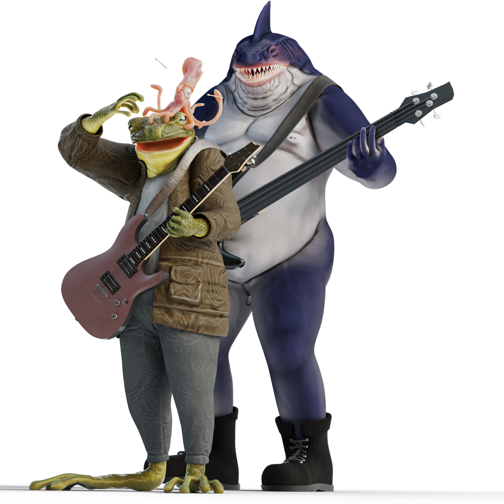

Hello friends! I hope all is well!
My name is Ian Cooper and I am interested in building tools for creatives, whether in science or art. I particularly enjoy working in areas involving computer graphics, dsp, and mathematical modeling. I have a special interest in the fields of topology and algebraic geometry and their applications in computer graphics.
I graduated from the University of Wisconsin - Whitewater with a degree in computer science and a degree in mathematics, graduating with summa cum laude in just three years. Since then, I have been working at Acuity Insurance as a Software Engineer.
Feel free to email me if you want to talk about anything you see here; or to just say hi!
Best,